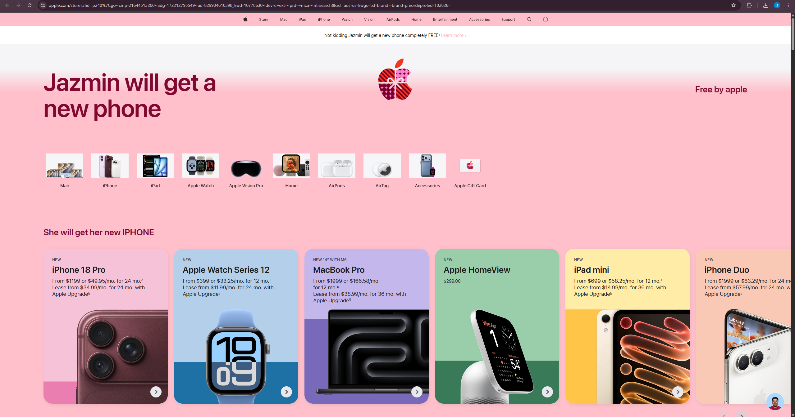

I Jazmin Sanchez Vandalism Apple's Website
I wanted to "vandalis" Apples website becasue i want a new phone. I changed the background color and headers, but the most fun of all I changed the color of the links.

What I "Vandalized"
I changed the background color and made a few of the headers say "Jazmin will get a new phone". I also wanted to make the website have a much vibrant color, unlike the white background it has.
- What text did you edit?
- What CSS properties did you modify?
- What made your edits interesting or amusing?
- Did you understand why some changes worked and some didn't?
- Why did you choose the changes you did?
- Were you able to understand how the HTML and CSS worked together to make the changes you made?
- Do you think you have a better sense of how dev tools can be used while crafting your own webpages?
I edited the header of the welcome page.
I modified the backgroud color and the color of the links.
I stated that Jazmin will get a new phone completely free.
Yes I did understand, some changes we're hard to tell because of the location of the changes.
I wanted to make it known that I wanted a new phone and I changed the background color to pink because I love pink.
yes, I was able to understand.
Yes